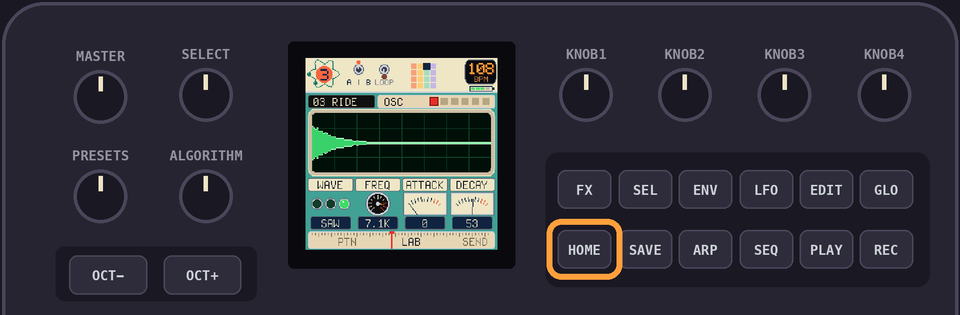
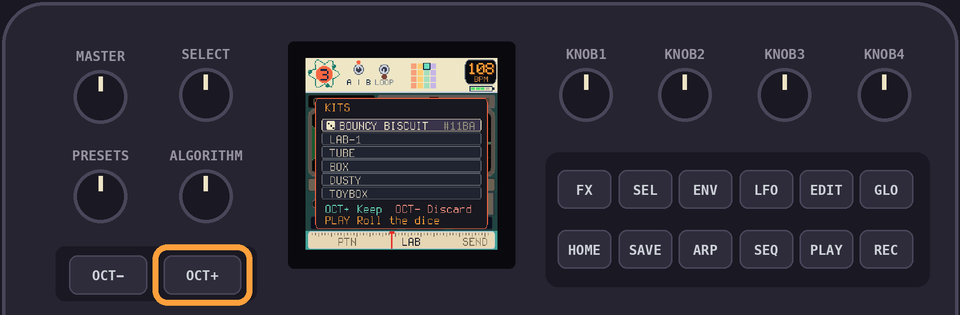
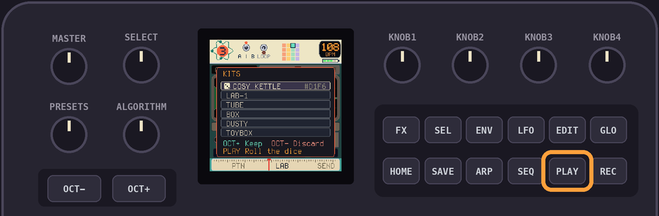
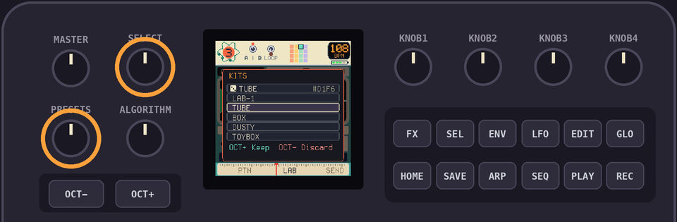
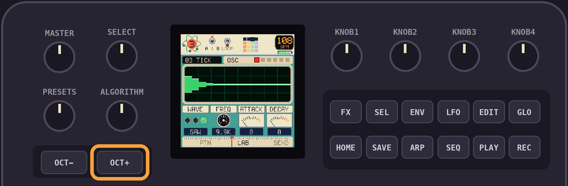
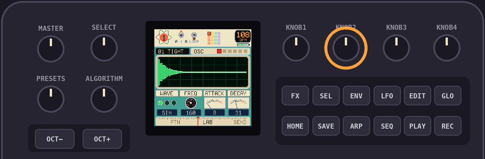
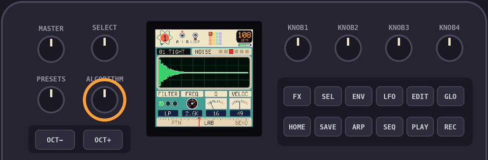
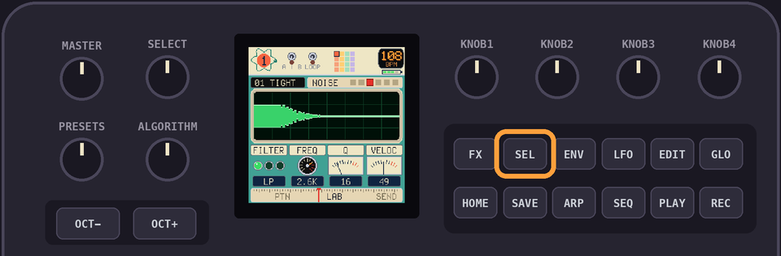
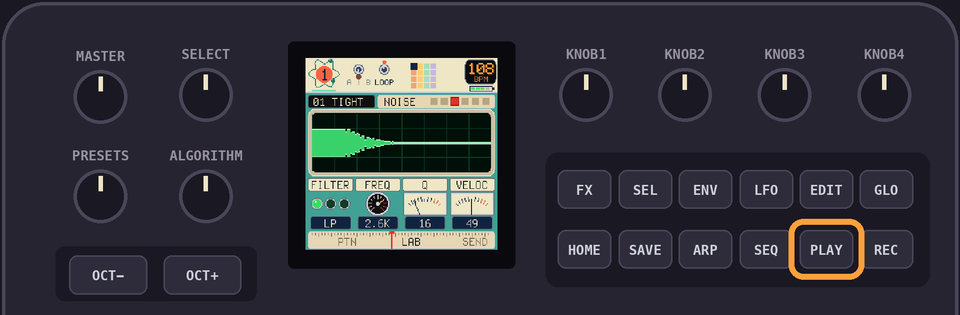
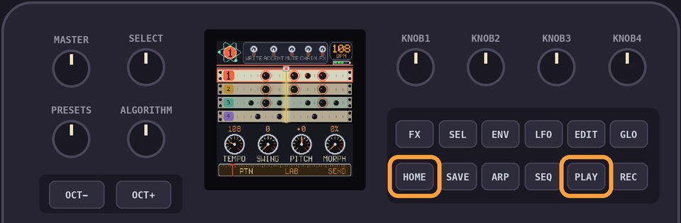

Drumlab TUTORIAL
Experiment 2
Verified
How the heck do we make 'infinite sounds' with a $67 synth and less than 1mb of space?
1Roll a kit
Tap
HOME to open the LAB view.
Hit
OCT+. A kit rolls, and plays itself.
Hit
PLAY to roll the dice again. Keep going until you hear one you like. The keys play its sounds.
2Preset kits
Turn
SELECT for LAB-1 and the preset kits: TUBE, BOX, DUSTY, TOYBOX, ELECTRO, SPACE, POCKET, ACID, CHIP.
3Keep it
Hit
OCT+ to keep the kit. OCT- puts the old one back.
The beat from the first tutorial plays on it, if you hit
PLAY in the PATTERN view.4Tweak a sound
Press a key to pick a sound. Turn
KNOB 2 to change its FREQ.
Turn
ALGORITHM for the next page.
Hit
SEL for the sound's other patch. Every sound is two, A and B.
Hit
PLAY to loop the sound while you tweak.
4.5Ohh... now i get it!
So I 'roll a kit' like in step 1, and if it's close to what im thinking, I take it and edit it to make it my own. If it sucks I roll again. But I can always edit the crap out of anything and make it sound like I want! Got it!
5Hear it in the beat
Tap
HOME twice to get back to PATTERN, then hit PLAY.